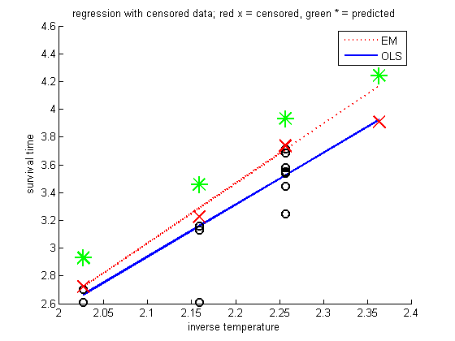

Contents
Load
load schmeeHahn;
y = log10(time);
x = 1000./(temp+273.2);
n = length(y);
uncensored = ~censored;
Estimate EM
[model, Ez] = linregCensoredFitEm(x, y, censored);
fprintf('w0 = %5.3f, w1 = %5.3f, sigma = %5.3f\n', ...
model.w(1), model.w(2), model.sigma);
w0 = -6.019, w1 = 4.311, sigma = 0.259
Estimate OLS
X = [ones(n,1) x];
wOLS = X\y;
Compute predictions
yhatEM = X*model.w;
yhatOLS = X*wOLS;
Plot
figure; hold on;
plot(x, yhatEM, 'r:', 'linewidth', 2);
plot(x, yhatOLS, 'b-', 'linewidth', 2);
plot(x(uncensored), y(uncensored), 'ko', 'markersize', 8, 'linewidth', 2);
plot(x(censored), y(censored), 'rx', 'markersize', 15, 'linewidth', 2);
plot(x(censored), Ez(censored), 'g*', 'markersize', 15, 'linewidth', 2);
legend('EM', 'OLS');
xlabel('inverse temperature')
ylabel('survival time')
title('regression with censored data; red x = censored, green * = predicted')
printPmtkFigure('linregCensoredSchmeeHahn')
